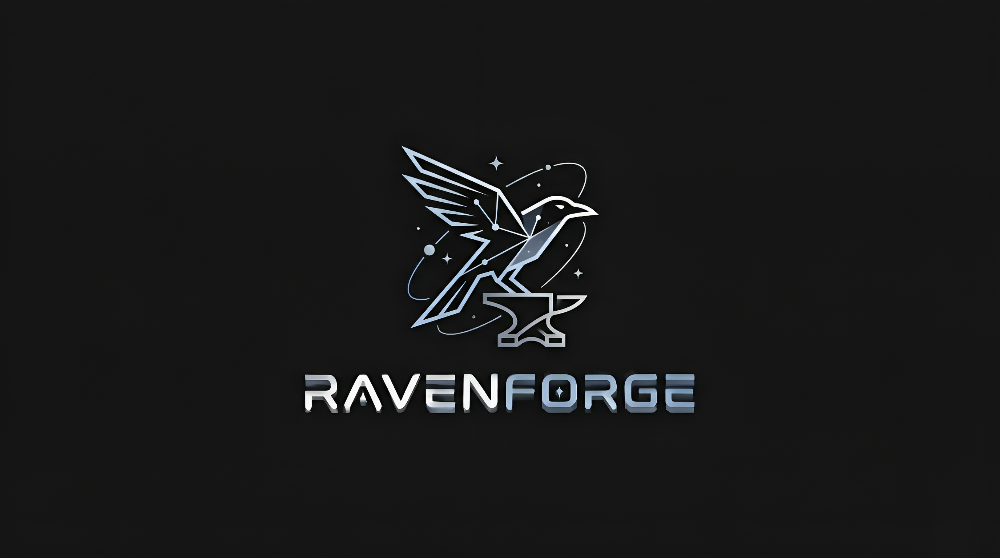

MISSION BRIEFING / 001
ABOUT COSMIC HORIZON
ABANDONED BUT NOT FORGOTTEN
Every world remembers that we were here.
COSMIC HORIZON is an interactive archive about the human marks left beyond Earth. It follows our journeys to the Moon and Mars, where landing stages, rover tracks, instruments, and footprints tell the story of exploration long after a mission has passed.
The Moon
From Apollo bootprints and lunar modules to the machines still mapping the surface, the Moon holds a lasting record of our first steps away from home.
The Red Planet
Rovers and landers have crossed the Martian terrain, leaving tracks and hardware across a world that continues to draw us back.
Explore the traces
Select a destination to discover mission artifacts, field notes, and the stories behind the objects that remain there.
Resources
Mission histories, artifact details, and selected imagery are drawn from NASA mission archives and the NASA Image and Video Library. Planet surface maps are credited to Solar System Scope and included as local project assets.
Developed with AI
Visual Studio Code was used to build the site. Copilot and Codex assisted with writing and refining the code, interactive camera behavior, and interface copy. The project team reviewed and integrated the changes; mission facts and imagery come from the cited sources.
DEVELOPMENT TOOLS
Ravenforge

COSMIC HORIZON was created by Team Ravenforge.